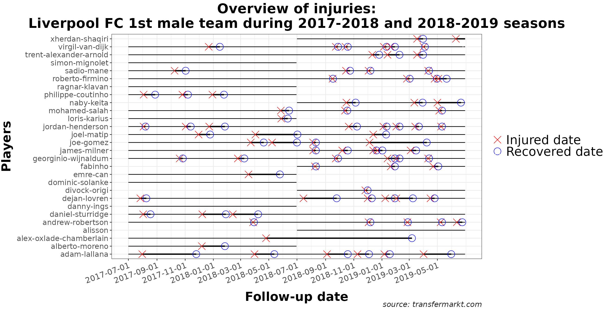
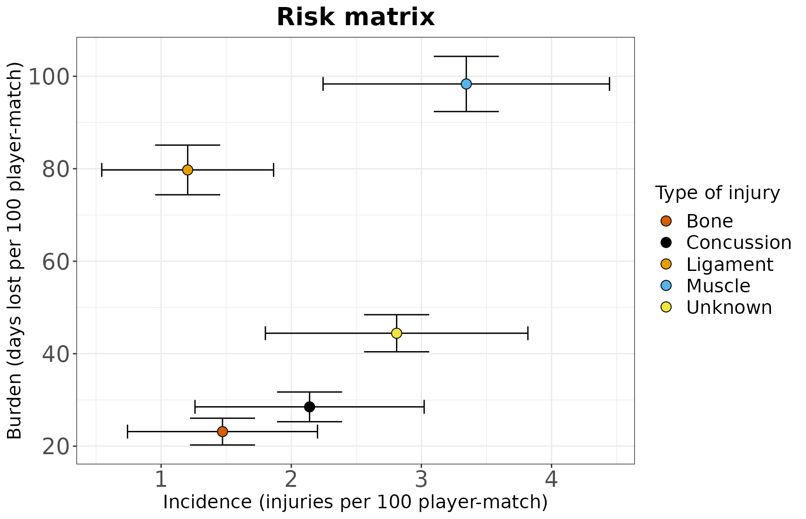
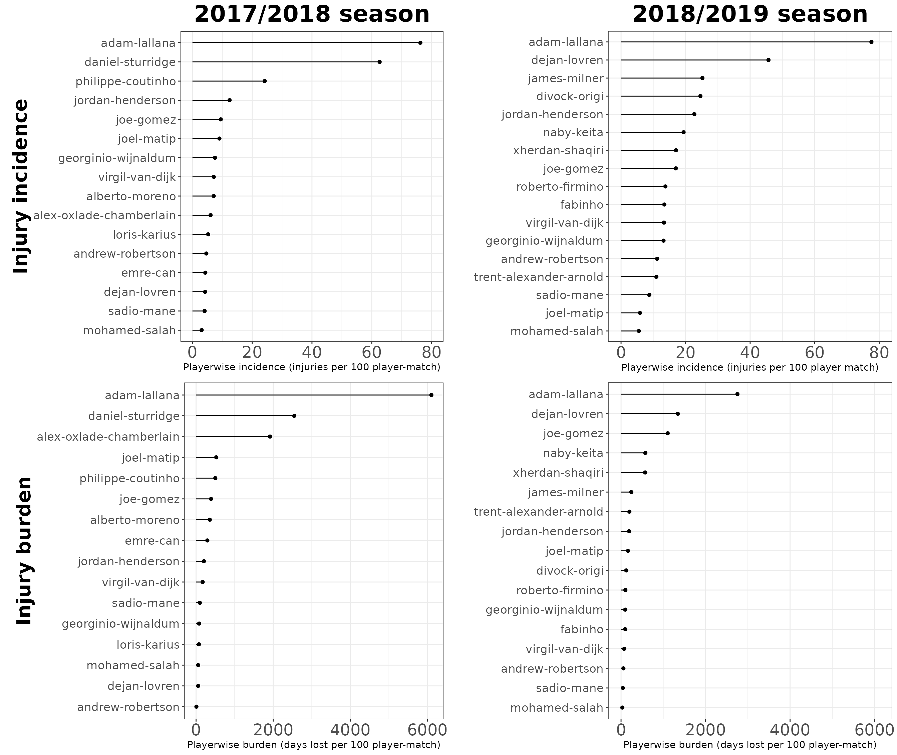
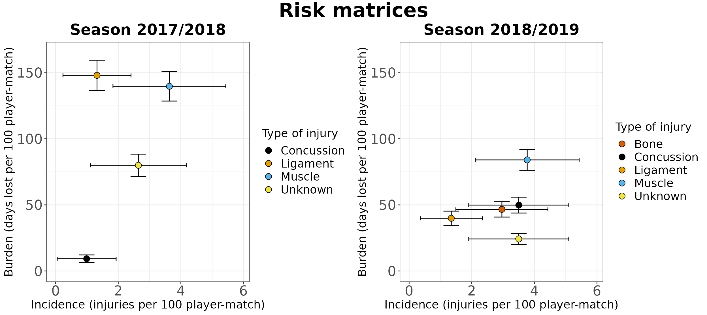
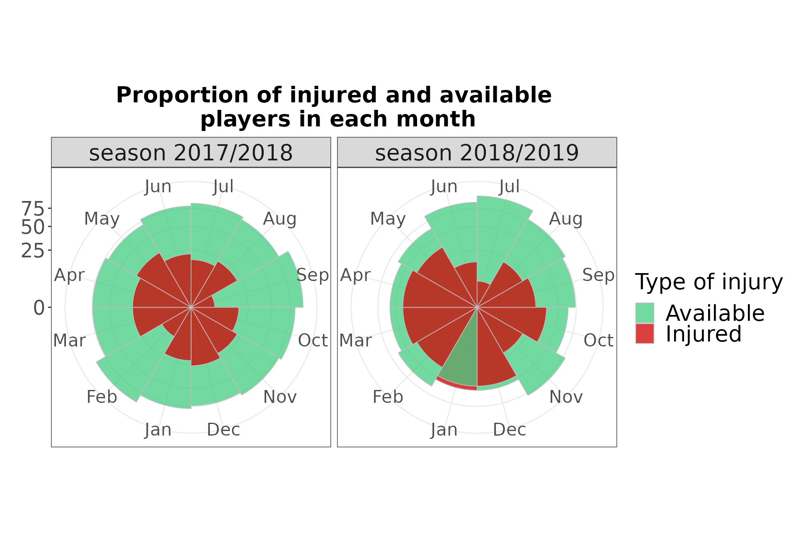
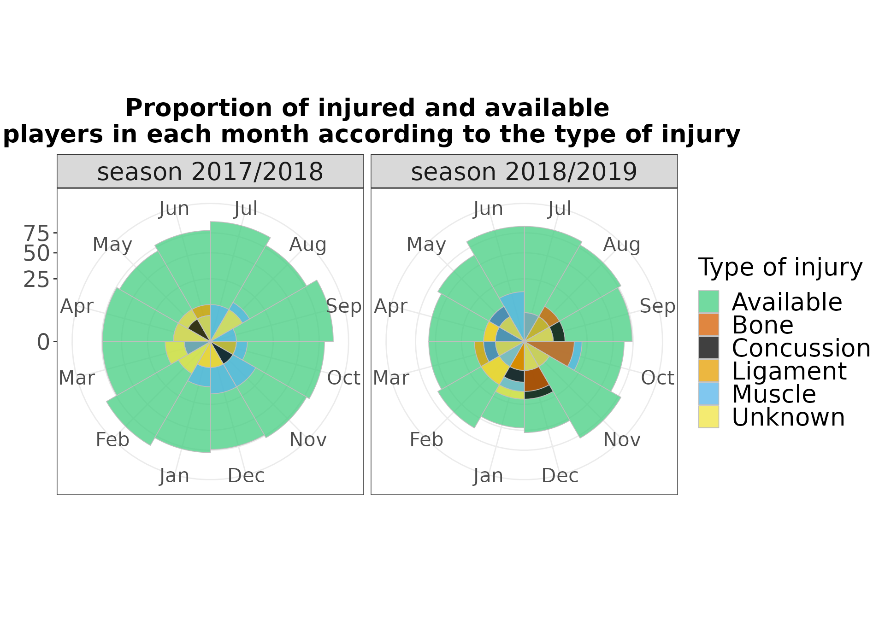

Visualize Sports Injury Data
2022-09-29
Source:vignettes/explore-injury-data.Rmd
explore-injury-data.RmdWARNING! File under construction.
WARNING! File under construction
library(injurytools)
library(ggplot2)
library(dplyr)
library(gridExtra)
library(grid)
library(knitr)Example data: we continue exploring the cohort of Liverpool Football Club male’s first team players over two consecutive seasons, 2017-2018 and 2018-2019, scrapped from https://www.transfermarkt.com/ website1.
A quick glance
gg_injphoto(injd,
title = "Overview of injuries:\nLiverpool FC 1st male team during 2017-2018 and 2018-2019 seasons",
by_date = "2 month",
fix = TRUE) +
## plus some lines of ggplot2 code..
xlab("Follow-up date") + ylab("Players") + labs(caption = "source: transfermarkt.com") +
theme(plot.title = element_text(face = "bold", hjust = 0.5, size = 22),
axis.text.x.bottom = element_text(size = 13, angle = 20, hjust = 1),
axis.text.y.left = element_text(size = 12),
axis.title.x = element_text(size = 20, face = "bold", vjust = -1),
axis.title.y = element_text(size = 20, face = "bold", vjust = 1.8),
legend.text = element_text(size = 20),
plot.caption = element_text(face = "italic", size = 12, colour = "gray10"))
Let’s count how many injuries (red crosses in the graph) occurred and how severe they were (length of the thick black line).
injds <- injsummary(injd)
injds_perinj <- injsummary(injd, var_type_injury = "injury_type")
# injds Code for tidying up the table
injds[["overall"]] %>%
mutate(incidence_new = paste0(round(injincidence, 2), " (", round(injincidence_lower, 2), ",", round(injincidence_upper, 2), ")"),
burden_new = paste0(round(injburden, 2), " (", round(injburden_lower, 2), ",", round(injburden_upper, 2), ")")) %>%
select(1:3, incidence_new, burden_new) %>%
kable(col.names = c("N injuries", "N days lost", "Total expo", "Incidence (95% CI)", "Burden (95% CI)"),
caption = "Injury incidence and injury burden are reported as 100 player-matches",
align = "c")
injds_perinj[["overall"]] %>%
mutate(incidence_new = paste0(round(injincidence, 2), " (", round(injincidence_lower, 2), ",", round(injincidence_upper, 2), ")"),
burden_new = paste0(round(injburden, 2), " (", round(injburden_lower, 2), ",", round(injburden_upper, 2), ")")) %>%
select(1:4, incidence_new, burden_new) %>%
kable(col.names = c("Type of injury", "N injuries", "N days lost", "Total expo", "Incidence (95% CI)", "Burden (95% CI)"),
caption = "Injury incidence and injury burden are reported as 100 player-matches",
align = "c")Overall
| N injuries | N days lost | Total expo | Incidence (95% CI) | Burden (95% CI) |
|---|---|---|---|---|
| 82 | 2049 | 7.5 | 9.88 (8.09,11.68) | 246.9 (237.93,255.87) |
Overall per injury type
| Type of injury | N injuries | N days lost | Total expo | Incidence (95% CI) | Burden (95% CI) |
|---|---|---|---|---|---|
| Bone | 11 | 13.41 | 173 | 1.47 (0.74,2.2) | 23.15 (20.25,26.04) |
| Concussion | 16 | 19.51 | 213 | 2.14 (1.26,3.02) | 28.5 (25.29,31.71) |
| Ligament | 9 | 10.98 | 596 | 1.2 (0.54,1.86) | 79.74 (74.37,85.12) |
| Muscle | 25 | 30.49 | 735 | 3.34 (2.24,4.45) | 98.34 (92.37,104.31) |
| Unknown | 21 | 25.61 | 332 | 2.81 (1.8,3.82) | 44.42 (40.41,48.43) |
Let’s plot the information shown in the second table in a risk matrix that displays injury incidence against injury burden.
gg_injriskmatrix(injds_perinj,
var_type_injury = "injury_type",
title = "Risk matrix") Code for further plot specifications
palette <- c("#000000", "#E69F00", "#56B4E9", "#009E73",
"#F0E442", "#0072B2", "#D55E00", "#CC79A7")
# source of the palette: http://www.cookbook-r.com/Graphs/Colors_(ggplot2)/
theme3 <- theme(plot.title = element_text(face = "bold", hjust = 0.5, size = 20),
axis.text.x.bottom = element_text(size = 18),
axis.text.y.left = element_text(size = 18),
axis.title.x = element_text(size = 15),
axis.title.y = element_text(size = 15),
legend.title = element_text(size = 15),
legend.text = element_text(size = 15))
gg_injriskmatrix(injds_perinj,
var_type_injury = "injury_type",
title = "Risk matrix") +
scale_fill_manual(name = "Type of injury",
values = palette[c(7, 1:3, 5)]) +
theme3
Comparing injuries occurred in 17/18 vs. 18/19
We prepare two injd objects:
## Plot just for checking whether cut_injd() worked well
p1 <- gg_injphoto(injd1, fix = TRUE, by_date = "3 months")
p2 <- gg_injphoto(injd2, fix = TRUE, by_date = "3 months")
grid.arrange(p1, p2, ncol = 2)
Let’s compute injury summary statistics for each season.
injds1 <- injsummary(injd1)
injds2 <- injsummary(injd2) Code for tidying up the tables
## **Season 2017/2018**
injds1[["overall"]] %>%
mutate(incidence_new = paste0(round(injincidence, 2), " (", round(injincidence_lower, 2), ",", round(injincidence_upper, 2), ")"),
burden_new = paste0(round(injburden, 2), " (", round(injburden_lower, 2), ",", round(injburden_upper, 2), ")")) %>%
select(1:3, incidence_new, burden_new) %>%
kable(col.names = c("N injuries", "N days lost", "Total expo", "Incidence (95% CI)", "Burden (95% CI)"),
caption = "Injury incidence and injury burden are reported as 100 player-matches",
align = "c")
## **Season 2018/2019**
injds2[["overall"]] %>%
mutate(incidence_new = paste0(round(injincidence, 2), " (", round(injincidence_lower, 2), ",", round(injincidence_upper, 2), ")"),
burden_new = paste0(round(injburden, 2), " (", round(injburden_lower, 2), ",", round(injburden_upper, 2), ")")) %>%
select(1:3, incidence_new, burden_new) %>%
kable(col.names = c("N injuries", "N days lost", "Total expo", "Incidence (95% CI)", "Burden (95% CI)"),
caption = "Injury incidence and injury burden are reported as 100 player-matches",
align = "c")Season 2017/2018
| N injuries | N days lost | Total expo | Incidence (95% CI) | Burden (95% CI) |
|---|---|---|---|---|
| 26 | 1141 | 9 | 6.26 (4.24,8.28) | 274.84 (261.45,288.22) |
Season 2018/2019
| N injuries | N days lost | Total expo | Incidence (95% CI) | Burden (95% CI) |
|---|---|---|---|---|
| 56 | 908 | 6 | 13.5 (10.53,16.47) | 218.94 (206.98,230.89) |
- Who were the most injured players? And the most severely affected?
Playerwise statistics can be extracted by injds2 <- injsummary(injd1); injds2[[1]] (or injds2[["playerwise"]]). Then, we plot them:
p11 <- gg_injbarplot(injds1)
p12 <- gg_injbarplot(injds1, type = "burden")
p21 <- gg_injbarplot(injds2)
p22 <- gg_injbarplot(injds2, type = "burden")
# grid.arrange(p11, p21, p12, p22, nrow = 2) Code for further plot specifications
theme2 <- theme(plot.title = element_text(face = "bold", hjust = 0.5, size = 26),
axis.text.x.bottom = element_text(size = 18),
axis.text.y.left = element_text(size = 13),
axis.title.x = element_text(size = 11, vjust = 1),
axis.title.y = element_text(size = 22, face = "bold", vjust = 1))
p11 <- p11 +
xlab("Injury incidence") +
ylab("Playerwise incidence (injuries per 100 player-match)") +
ggtitle("2017/2018 season") +
scale_y_continuous(limits = c(0, 80)) + ## same x axis
theme2 +
theme(plot.margin = margin(0.2, 0.2, 0.2, 0.5, "cm"))
p12 <- p12 +
xlab("Injury burden") +
ylab("Playerwise burden (days lost per 100 player-match)") +
scale_y_continuous(limits = c(0, 6110)) +
theme2 +
theme(plot.margin = margin(0.2, 0.2, 0.2, 0.65, "cm"))
p21 <- p21 +
ylab("Playerwise incidence (injuries per 100 player-match)") +
ggtitle("2018/2019 season") +
scale_y_continuous(limits = c(0, 80)) +
theme2
p22 <-p22 +
ylab("Playerwise burden (days lost per 100 player-match)") +
scale_y_continuous(limits = c(0, 6110)) +
theme2
grid.arrange(p11, p21, p12, p22, nrow = 2)
- Which injuries were more frequent? And more burdensome?
## Calculate summary statistics
injds1_perinj <- injsummary(injd1, var_type_injury = "injury_type")
injds2_perinj <- injsummary(injd2, var_type_injury = "injury_type")
## Plot
p1 <- gg_injriskmatrix(injds1_perinj, var_type_injury = "injury_type",
title = "Season 2017/2018", add_contour = FALSE)
p2 <- gg_injriskmatrix(injds2_perinj, var_type_injury = "injury_type",
title = "Season 2018/2019", add_contour = FALSE)
# Print both plots side by side
# grid.arrange(p1, p2, nrow = 1) Code for further plot specifications
palette <- c("#000000", "#E69F00", "#56B4E9", "#009E73",
"#F0E442", "#0072B2", "#D55E00", "#CC79A7")
# source of the palette: http://www.cookbook-r.com/Graphs/Colors_(ggplot2)/
theme3 <- theme(plot.title = element_text(face = "bold", hjust = 0.5, size = 20),
axis.text.x.bottom = element_text(size = 18),
axis.text.y.left = element_text(size = 18),
axis.title.x = element_text(size = 15),
axis.title.y = element_text(size = 15),
legend.title = element_text(size = 15),
legend.text = element_text(size = 15))
p1 <- p1 +
scale_x_continuous(limits = c(0, 5.9)) +
scale_y_continuous(limits = c(0, 165)) +
scale_fill_manual(name = "Type of injury",
values = palette[c(1:3, 5)]) + # get rid off the green (pos: 4)
theme3
p2 <- p2 +
scale_x_continuous(limits = c(0, 5.9)) +
scale_y_continuous(limits = c(0, 165)) +
scale_fill_manual(name = "Type of injury",
values = palette[c(7, 1:3, 5)]) + # keep the same color coding
theme3
grid.arrange(p1, p2, ncol = 2,
top = textGrob("Risk matrices", gp=gpar(fontsize = 26, font = 2))) ## for the main title
- How many players were injury free in each month?
We will plot polar area diagrams2.
gg_injpolar(injd, by = "monthly") Code for further plot specifications
theme4 <- theme(plot.title = element_text(face = "bold", hjust = 0.5, size = 20),
axis.text.x = element_text(size = 16),
axis.text.y = element_text(size = 18),
legend.title = element_text(size = 20),
legend.text = element_text(size = 20),
strip.text = element_text(size = 20))
gg_injpolar(injd, by = "monthly",
title = "Proportion of injured and available\n players in each month") +
scale_fill_manual(name = "Type of injury",
values = c("seagreen3", "red3")) +
theme4
gg_injpolar(injd, by = "monthly", var_type_injury = "injury_type") Code for further plot specifications
palette2 <- c("seagreen3", "#000000", "#E69F00", "#56B4E9", "#009E73",
"#F0E442", "#0072B2", "#D55E00", "#CC79A7")
# source of the palette: http://www.cookbook-r.com/Graphs/Colors_(ggplot2)/
gg_injpolar(injd, by = "monthly",
var_type_injury = "injury_type",
title = "Proportion of injured and available\n players in each month according to the type of injury") +
scale_fill_manual(name = "Type of injury",
values = palette2[c(1, 8, 2:4, 6)]) +
theme4